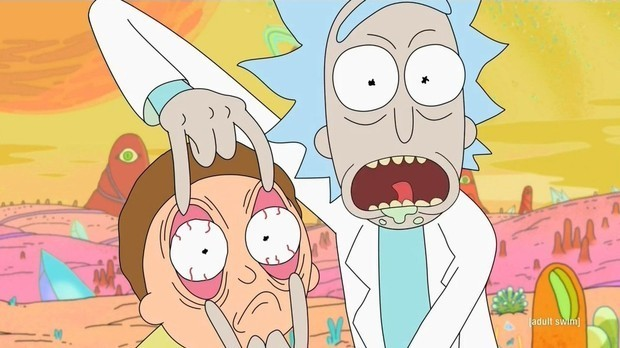

Tudo sobre Rick & Morty
Criada por Justin Roiland e Dan Harmon, Rick & Morty é uma série animada de comédia que mostra as aventuras interdimensionais de Rick, a mente mais brilhante da galáxia, e seu neto Morty. Com sua arma capaz de criar portais para viajar no tempo-espaço, Rick leva Morty para explorar todos as absurdas formas de vida que o universo é capaz de sustentar. Apesar de genial, Rick tem sofre de alcoolismo e possui uma relação conflituosa com sua família, fruto da sua visão cínica da vida e seu egoísmo. Por outro lado, Morty está longe de ter o intelecto do seu avô, mas é o único capaz de fazê-lo ser um pouquinho mais gentil. Entre momentos hilários e reflexões interessantes sobre a vida, Rick & Morty arranca gargalhadas e ainda rende ótimas discussões filosóficas.